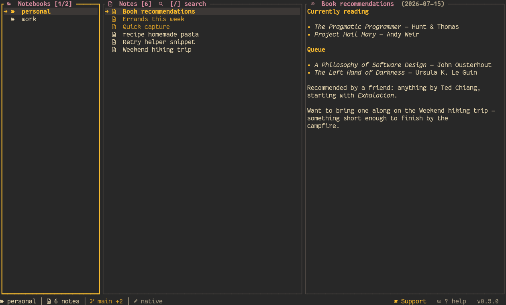

c) grew a live filter box: type to narrow the list case-insensitively (same behavior as the which-key modal), Esc clears the query before cancelling, Enter is a no-op on zero matches, and PageUp/PageDown/Home/End join j/k — handy now that the catalog is 37 themes. Input boxes across modals also render the active theme's background instead of the terminal default.LoL (Jinx), LoL (Teemo), LoL (Ahri)) — neon pink/ electric-blue, scout-green/mushroom-yellow, and magenta/purple fox-tail palettes. - Video games — Pokémon (Pikachu/Charizard/Gengar), Zelda, Portal (the one light "Aperture laboratory" palette), Super Mario and Luigi, Overwatch, Halo, Stardew Valley. - Hacker / cyberpunk — Matrix, Cyberpunk 2077, Arasaka, Synthwave, Tron, Fallout Terminal, Blade Runner, Doom, Ghost in the Shell, Mr. Robot. Plus Gruvbox's official hard/soft contrast variants (dark and light).default stays last).<video> (autoplays reliably, ~3x smaller than the GIF it replaced), and it's theme-aware: each theme with a committed recording (docs/assets/demo/{id}.mp4) swaps the hero video to match, falling back to the default gruvbox-dark recording otherwise — the site probes for the file at runtime, so the whole 37-theme catalog is covered as recordings get committed. scripts/demo-gif.sh gained a THEME env var so the same recording can be shot per theme, and reduced-motion users still get a static screenshot.── Classic ──/── LoL ──/── Games ──/ ── Hacker ── headers) and its filter matches family too (type hack/pok/lol); shiki theme list shows the same grouped order, and the site's "Make it yours" section got family filter tabs. Themes carry a family field backed by validation tests.[theme.notebooks] maps a notebook name to a theme that takes effect while that notebook is focused — the picker writes there when a notebook is selected, the CLI sets it with shiki theme set <theme> --notebook <name>, and Settings shows the effective theme.default last, by_name resolves all 37), and the 12 palette files were rewritten over a theme! macro to cut the per-palette boilerplate.Ctrl+D in the inline editor inserts today's date (YYYY-MM-DD) at the cursor, anywhere in the buffer, as a single undo step — the /date slash-menu snippet only works at line start. [editor] timestamp_with_time (off by default) appends the current time (YYYY-MM-DD HH:MM); [editor] insert_timestamp (on by default) gates the whole feature.o in PREVIEW, Ctrl+O while editing) now has a live filter box: typing narrows the heading list case-insensitively (the same filter behavior as the which-key modal), Enter jumps to the filtered heading, Esc closes and resets. Navigation is arrow keys/ PageUp/PageDown/Home/End — every letter is typeable into the filter.[editor] spellcheck, off by default): Ctrl+E runs a pass by shelling out to hunspell (the same external-binary pattern as pretty-pdf), underlines misspelled words in the editor and lists them in a popup with a ▸ cursor on the selected word (j/k move it) — Enter opens a suggestions submenu to pick which correction to apply, the replaced word flashes in the theme's success color for a moment (a visible confirmation alongside the footer's 'old' → 'new' message), r re-runs the pass. [editor] spellcheck_lang selects the dictionary (-d, e.g. es_ES); rows edited after a pass stop being underlined instead of repainting stale ranges. shiki doctor reports whether hunspell is installed.!alt images that stand alone on their own line render as real terminal art in PREVIEW via chafa (external binary, ANSI-colored half-block output parsed into styled rows that scroll with the panel). [general] preview_images (on by default), chafa_path (absolute path when it isn't on $PATH), and preview_image_scale (fraction of the panel width) control it; paths resolve against the note's folder, the notebook root, then data_dir. When chafa is missing or the file doesn't exist, the previous icon+alt rendering is kept, and an image embedded mid-line always stays that way. shiki doctor reports whether chafa is available.shiki theme list shows them, the theme picker live-previews them): LoL (Jinx) (neon-pink/electric-blue with a Zaun-night background), LoL (Teemo) (scout green with yellow scarf accents, Bandle-forest background), and LoL (Ahri) (magenta fox tails with purple essence-orb accents, Ionia- twilight background). The marketing site's theme swatches cover all three (CSS-only mockups until screenshots are captured).